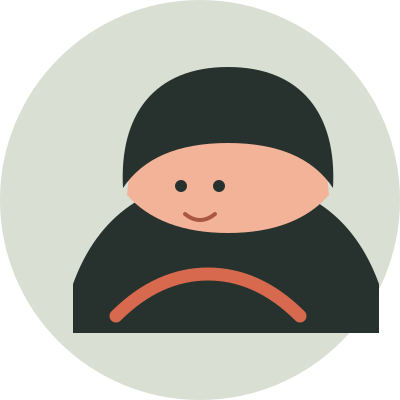

keepcurious 少即是多
SELECTED NOTES
最近写了什么
A LITTLE ABOUT ME
我喜欢把复杂的东西，
说得简单一点。
白天写代码，偶尔做产品，晚上读书和散步。这个网站没有固定主题，只有一些我愿意反复思考的事情。

keepSELECTED NOTES
A LITTLE ABOUT ME
白天写代码，偶尔做产品，晚上读书和散步。这个网站没有固定主题，只有一些我愿意反复思考的事情。